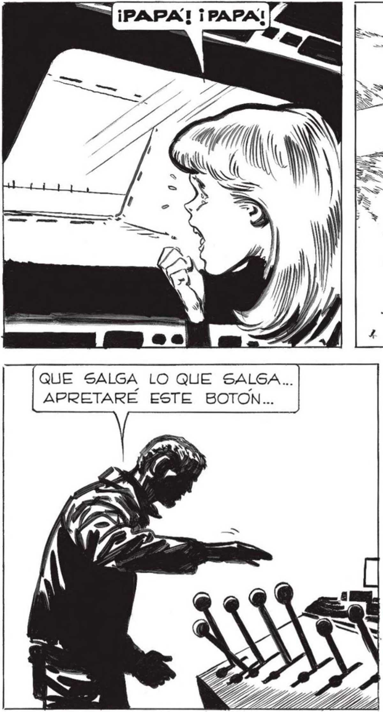

— —= 7H ¡VIENEN LOS HOM- ¡NOS HABRAN VISTO ENTRAR! O A HA AS É BRES-ROBOTS ! == VIERON QUE LA ESCOTILLA SE CERRO.. IN a = = 3 <A ÉS - 3 S t YES SAD S y Ñ + aj S 2 "E A k ANS N TENEMOS QUE APURARNOS... Hasia que se GUIR PROBANDO.. CORRÍ LO QUE CREÍ LINA PALANPan Nx ES , boa k , Pr ds 028 Y Ñ € a , a s ¿ Upa | .' . y Ñ 44 » e, r * Q 4 4 RE A ) E 4 1 Y A , ANN ANS Y > , , s Ána * Huso un sonivo AsuDísimo... a
